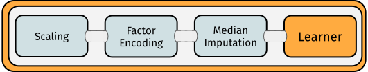
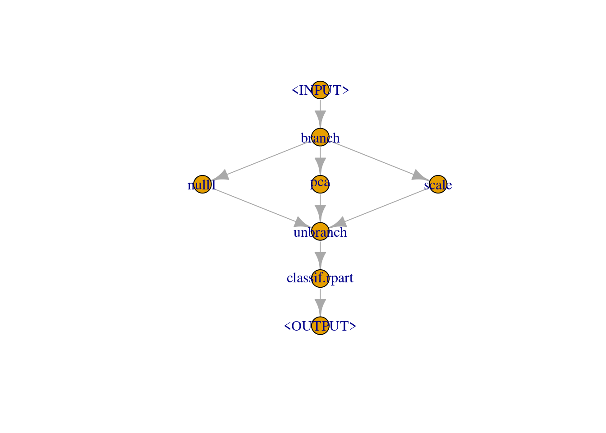
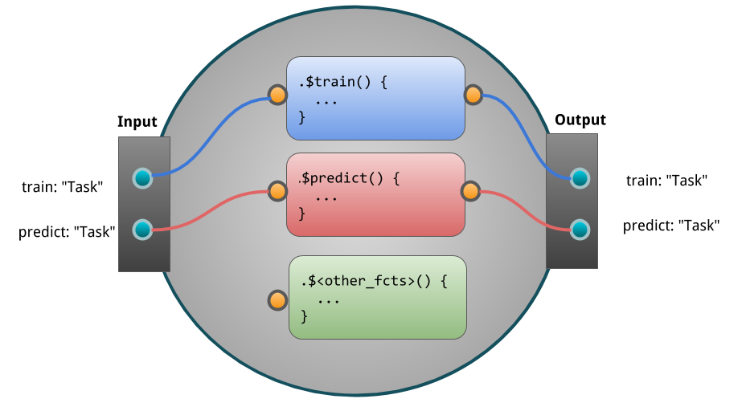
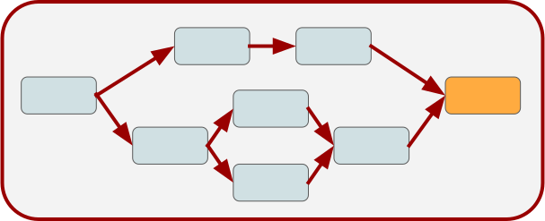
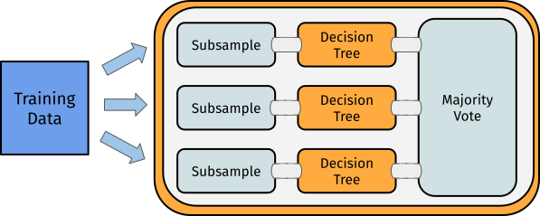
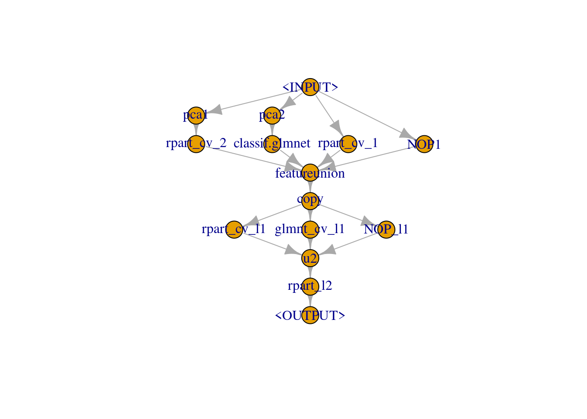
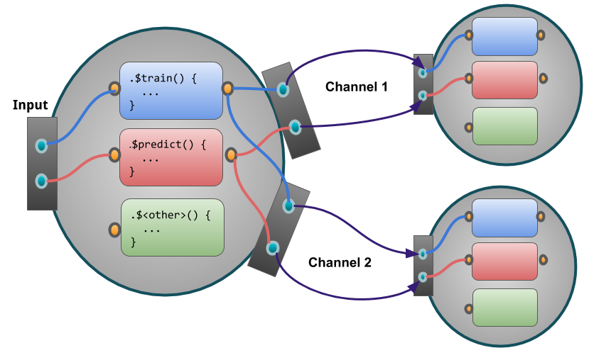
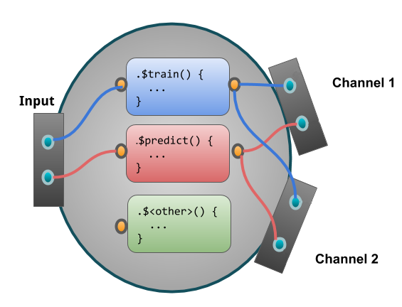
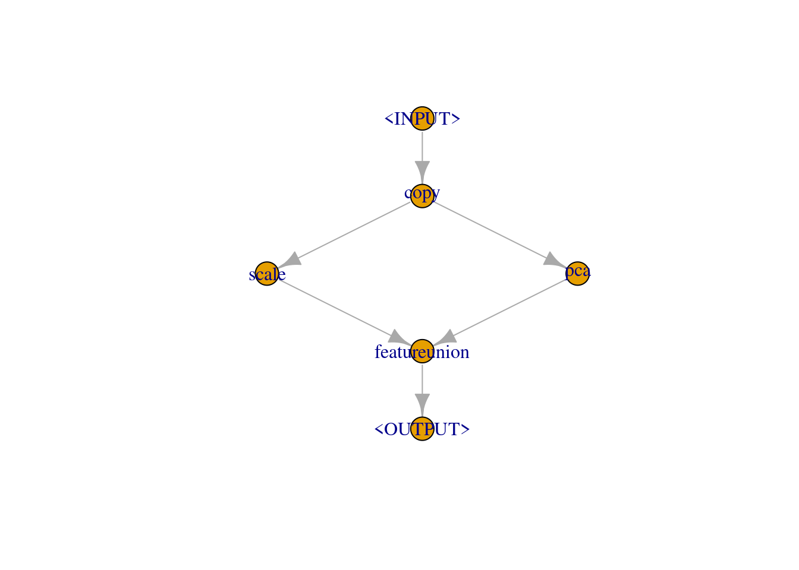

6 Pipelines
Abstract
TODO (150-200 WORDS)
Note
This chapter is currently being re-written, in this PR. You can continue reading here if you want to learn about mlr3pipelines, but you currently don’t need to bother checking this chapter for typos etc.
mlr3pipelines (Binder et al. 2021) is a dataflow programming toolkit. This chapter focuses on the applicant’s side of the package. A more in-depth and technically oriented guide can be found in the In-depth look into mlr3pipelines chapter.
Machine learning workflows can be written as directed “Graphs”/“Pipelines” that represent data flows between preprocessing, model fitting, and ensemble learning units in an expressive and intuitive language. We will most often use the term “Graph” in this manual but it can interchangeably be used with “pipeline” or “workflow”.
Below you can examine an example for such a graph:
Single computational steps can be represented as so-called PipeOps, which can then be connected with directed edges in a Graph. The scope of mlr3pipelines is still growing. Currently supported features are:
- Data manipulation and preprocessing operations, e.g. PCA, feature filtering, imputation
- Task subsampling for speed and outcome class imbalance handling
-
mlr3Learner operations for prediction and stacking - Ensemble methods and aggregation of predictions
Additionally, we implement several meta operators that can be used to construct powerful pipelines:
- Simultaneous path branching (data going both ways)
- Alternative path branching (data going one specific way, controlled by hyperparameters)
An extensive introduction to creating custom PipeOps (PO’s) can be found in the technical introduction.
Using methods from mlr3tuning, it is even possible to simultaneously optimize parameters of multiple processing units.
A predecessor to this package is the mlrCPO package, which works with mlr 2.x. Other packages that provide, to varying degree, some preprocessing functionality or machine learning domain specific language, are:
An example for a Pipeline that can be constructed using mlr3pipelines is depicted below:

6.1 The Building Blocks: PipeOps
The building blocks of mlr3pipelines are PipeOp-objects (PO). They can be constructed directly using PipeOp<NAME>$new(), but the recommended way is to retrieve them from the mlr_pipeops dictionary:
key label
1: boxcox Box-Cox Transformation of Numeric Features
2: branch Path Branching
3: chunk Chunk Input into Multiple Outputs
4: classbalancing Class Balancing
5: classifavg Majority Vote Prediction
---
60: threshold Change the Threshold of a Classification Prediction
61: tunethreshold Tune the Threshold of a Classification Prediction
62: unbranch Unbranch Different Paths
63: vtreat Interface to the vtreat Package
64: yeojohnson Yeo-Johnson Transformation of Numeric Features
9 variables not shown: [packages, tags, feature_types, input.num, output.num, input.type.train, input.type.predict, output.type.train, output.type.predict]Single POs can be created using the dictionary:
or using syntactic sugar po(<name>):
Some POs require additional arguments for construction:
or in short po("learner", lrn("classif.rpart")).
Hyperparameters of POs can be set through the param_vals argument. Here we set the fraction of features for a filter:
or in short notation:
The figure below shows an exemplary PipeOp. It takes an input, transforms it during .$train and .$predict and returns data:

6.2 The Pipeline Operator: %>>%
It is possible to create intricate Graphs with edges going all over the place (as long as no loops are introduced). Irrespective, there is usually a clear direction of flow between “layers” in the Graph. It is therefore convenient to build up a Graph from layers.
This can be done using the %>>% (“double-arrow”) operator. It takes either a PipeOp or a Graph on each of its sides and connects all of the outputs of its left-hand side to one of the inputs each of its right-hand side. The number of inputs therefore must match the number of outputs.
6.3 Nodes, Edges and Graphs
POs are combined into Graphs.
POs are identified by their $id. Note that the operations all modify the object in-place and return the object itself. Therefore, multiple modifications can be chained.
For this example we use the pca PO defined above and a new PO named “mutate”. The latter creates a new feature from existing variables. Additionally, we use the filter PO again.
The recommended way to construct a graph is to use the %>>% operator to chain POs or Graphs.
To illustrate how this sugar operator works under the surface we will include an example of the manual way (= hard way) to construct a Graph. This is done by creating an empty graph first. Then one fills the empty graph with POs, and connects edges between the POs. Conceptually, this may look like this:

The constructed Graph can be inspected using its $plot() function:
Chaining multiple POs of the same kind
If multiple POs of the same kind should be chained, it is necessary to change the id to avoid name clashes. This can be done by either accessing the $id slot or during construction:
6.4 Modeling
The main purpose of a Graph is to build combined preprocessing and model fitting pipelines that can be used as mlr3 Learner.
Conceptually, the process may be summarized as follows:

In the following we chain two preprocessing tasks:
- mutate (creation of a new feature)
- filter (filtering the dataset)
Subsequently one can chain a PO learner to train and predict on the modified dataset.
Until here we defined the main pipeline stored in Graph. Now we can train and predict the pipeline:
$classif.rpart.output
NULL$classif.rpart.output
<PredictionClassif> for 150 observations:
row_ids truth response
1 setosa setosa
2 setosa setosa
3 setosa setosa
---
148 virginica virginica
149 virginica virginica
150 virginica virginicaRather than calling $train() and $predict() manually, we can put the pipeline Graph into a GraphLearner object. A GraphLearner encapsulates the whole pipeline (including the preprocessing steps) and can be put into resample() or benchmark() . If you are familiar with the old mlr package, this is the equivalent of all the make*Wrapper() functions. The pipeline being encapsulated (here Graph) must always produce a Prediction with its $predict() call, so it will probably contain at least one PipeOpLearner .
This learner can be used for model fitting, resampling, benchmarking, and tuning:
<ResampleResult> of 3 iterations
* Task: iris
* Learner: mutate.variance.classif.rpart
* Warnings: 0 in 0 iterations
* Errors: 0 in 0 iterations6.4.1 Setting Hyperparameters
Individual POs offer hyperparameters because they contain $param_set slots that can be read and written from $param_set$values (via the paradox package). The parameters get passed down to the Graph, and finally to the GraphLearner . This makes it not only possible to easily change the behavior of a Graph / GraphLearner and try different settings manually, but also to perform tuning using the mlr3tuning package.
6.4.2 Tuning
If you are unfamiliar with tuning in mlr3, we recommend to take a look at the section about tuning first. Here we define a ParamSet for the “rpart” learner and the “variance” filter which should be optimized during the tuning process.
After having defined the Tuner, a random search with 10 iterations is created. For the inner resampling, we are simply using holdout (single split into train/test) to keep the runtimes reasonable.
classif.rpart.cp variance.filter.frac learner_param_vals x_domain
1: 0.04886918 0.6870548 <list[5]> <list[2]>
1 variable not shown: [classif.ce]The tuning result can be found in the respective result slots.
6.5 Non-Linear Graphs
The Graphs seen so far all have a linear structure. Some POs may have multiple input or output channels. These channels make it possible to create non-linear Graphs with alternative paths taken by the data.
Possible types are:
- Branching: Splitting of a node into several paths, e.g. useful when comparing multiple feature-selection methods (pca, filters). Only one path will be executed.
- Copying: Splitting of a node into several paths, all paths will be executed (sequentially). Parallel execution is not yet supported.
-
Stacking: Single graphs are stacked onto each other, i.e. the output of one
Graphis the input for another. In machine learning this means that the prediction of oneGraphis used as input for anotherGraph
6.5.1 Branching & Copying
The PipeOpBranch and PipeOpUnbranch POs make it possible to specify multiple alternative paths. Only one path is actually executed, the others are ignored. The active path is determined by a hyperparameter. This concept makes it possible to tune alternative preprocessing paths (or learner models).
Below a conceptual visualization of branching:

PipeOp(Un)Branch is initialized either with the number of branches, or with a character-vector indicating the names of the branches. If names are given, the “branch-choosing” hyperparameter becomes more readable. In the following, we set three options:
- Doing nothing (“nop”)
- Applying a PCA
- Scaling the data
It is important to “unbranch” again after “branching”, so that the outputs are merged into one result objects.
In the following we first create the branched graph and then show what happens if the “unbranching” is not applied:
Without “unbranching” one creates the following graph:
Now when “unbranching”, we obtain the following results:
The same can be achieved using a shorter notation:
# List of pipeops
opts = list(po("nop", "no_op"), po("pca"), po("scale"))
# List of po ids
opt_ids = mlr3misc::map_chr(opts, `[[`, "id")
po("branch", options = opt_ids) %>>%
gunion(opts) %>>%
po("unbranch", options = opt_ids)Graph with 5 PipeOps:
ID State sccssors prdcssors
branch <<UNTRAINED>> no_op,pca,scale
no_op <<UNTRAINED>> unbranch branch
pca <<UNTRAINED>> unbranch branch
scale <<UNTRAINED>> unbranch branch
unbranch <<UNTRAINED>> no_op,pca,scale6.5.2 Model Ensembles
We can leverage the different operations presented to connect POs. This allows us to form powerful graphs.
Before we go into details, we split the task into train and test indices.
6.5.2.1 Bagging
We first examine Bagging introduced by (Breiman 1996). The basic idea is to create multiple predictors and then aggregate those to a single, more powerful predictor.
“… multiple versions are formed by making bootstrap replicates of the learning set and using these as new learning sets” (Breiman 1996)
Bagging then aggregates a set of predictors by averaging (regression) or majority vote (classification). The idea behind bagging is, that a set of weak, but different predictors can be combined in order to arrive at a single, better predictor.
We can achieve this by downsampling our data before training a learner, repeating this e.g. 10 times and then performing a majority vote on the predictions. Graphically, it may be summarized as follows:

First, we create a simple pipeline, that uses PipeOpSubsample before a PipeOpLearner is trained:
We can now copy this operation 10 times using pipeline_greplicate. The pipeline_greplicate allows us to parallelize many copies of an operation by creating a Graph containing n copies of the input Graph. We can also create it using syntactic sugar via ppl():
Afterwards we need to aggregate the 10 pipelines to form a single model:
Now we can plot again to see what happens:
This pipeline can again be used in conjunction with GraphLearner in order for Bagging to be used like a Learner:
<PredictionClassif> for 30 observations:
row_ids truth response prob.setosa prob.versicolor prob.virginica
16 setosa setosa 1 0.0 0.0
18 setosa setosa 1 0.0 0.0
21 setosa setosa 1 0.0 0.0
---
129 virginica virginica 0 0.0 1.0
134 virginica versicolor 0 0.5 0.5
149 virginica virginica 0 0.0 1.0In conjunction with different Backends, this can be a very powerful tool. In cases when the data does not fully fit in memory, one can obtain a fraction of the data for each learner from a DataBackend and then aggregate predictions over all learners.
6.5.2.2 Stacking
Stacking (Wolpert 1992) is another technique that can improve model performance. The basic idea behind stacking is the use of predictions from one model as features for a subsequent model to possibly improve performance.
Below an conceptual illustration of stacking:

As an example we can train a decision tree and use the predictions from this model in conjunction with the original features in order to train an additional model on top.
To limit overfitting, we additionally do not predict on the original predictions of the learner. Instead, we predict on out-of-bag predictions. To do all this, we can use PipeOpLearnerCV .
PipeOpLearnerCV performs nested cross-validation on the training data, fitting a model in each fold. Each of the models is then used to predict on the out-of-fold data. As a result, we obtain predictions for every data point in our input data.
We first create a “level 0” learner, which is used to extract a lower level prediction. Additionally, we $clone() the learner object to obtain a copy of the learner. Subsequently, one sets a custom id for the PipeOp .
We use PipeOpNOP in combination with gunion, in order to send the unchanged Task to the next level. There it is combined with the predictions from our decision tree learner.
Afterwards, we want to concatenate the predictions from PipeOpLearnerCV and the original Task using PipeOpFeatureUnion :
Now we can train another learner on top of the combined features:
<PredictionClassif> for 30 observations:
row_ids truth response
16 setosa setosa
18 setosa setosa
21 setosa setosa
---
129 virginica virginica
134 virginica versicolor
149 virginica virginicaIn this vignette, we showed a very simple use-case for stacking. In many real-world applications, stacking is done for multiple levels and on multiple representations of the dataset. On a lower level, different preprocessing methods can be defined in conjunction with several learners. On a higher level, we can then combine those predictions in order to form a very powerful model.
6.5.2.3 Multilevel Stacking
In order to showcase the power of mlr3pipelines, we will show a more complicated stacking example.
In this case, we train a glmnet and 2 different rpart models (some transform its inputs using PipeOpPCA) on our task in the “level 0” and concatenate them with the original features (via gunion). The result is then passed on to “level 1”, where we copy the concatenated features 3 times and put this task into an rpart and a glmnet model. Additionally, we keep a version of the “level 0” output (via PipeOpNOP) and pass this on to “level 2”. In “level 2” we simply concatenate all “level 1” outputs and train a final decision tree.
In the following examples, use <lrn>$param_set$values$<param_name> = <param_value> to set hyperparameters for the different learner.
library("magrittr")
library("mlr3learners") # for classif.glmnet
rprt = lrn("classif.rpart", predict_type = "prob")
glmn = lrn("classif.glmnet", predict_type = "prob")
# Create Learner CV Operators
lrn_0 = po("learner_cv", rprt, id = "rpart_cv_1")
lrn_0$param_set$values$maxdepth = 5L
lrn_1 = po("pca", id = "pca1") %>>% po("learner_cv", rprt, id = "rpart_cv_2")
lrn_1$param_set$values$rpart_cv_2.maxdepth = 1L
lrn_2 = po("pca", id = "pca2") %>>% po("learner_cv", glmn)
# Union them with a PipeOpNULL to keep original features
level_0 = gunion(list(lrn_0, lrn_1, lrn_2, po("nop", id = "NOP1")))
# Cbind the output 3 times, train 2 learners but also keep level
# 0 predictions
level_1 = level_0 %>>%
po("featureunion", 4) %>>%
po("copy", 3) %>>%
gunion(list(
po("learner_cv", rprt, id = "rpart_cv_l1"),
po("learner_cv", glmn, id = "glmnt_cv_l1"),
po("nop", id = "NOP_l1")
))
# Cbind predictions, train a final learner
level_2 = level_1 %>>%
po("featureunion", 3, id = "u2") %>>%
po("learner", rprt, id = "rpart_l2")
# Plot the resulting graph
level_2$plot(html = FALSE)
And we can again call .$train and .$predict:
6.6 Adding new PipeOps
This section showcases how the mlr3pipelines package can be extended to include custom PipeOps. To run the following examples, we will need a Task; we are using the well-known “Iris” task:
Species Petal.Length Petal.Width Sepal.Length Sepal.Width
1: setosa 1.4 0.2 5.1 3.5
2: setosa 1.4 0.2 4.9 3.0
3: setosa 1.3 0.2 4.7 3.2
4: setosa 1.5 0.2 4.6 3.1
5: setosa 1.4 0.2 5.0 3.6
---
146: virginica 5.2 2.3 6.7 3.0
147: virginica 5.0 1.9 6.3 2.5
148: virginica 5.2 2.0 6.5 3.0
149: virginica 5.4 2.3 6.2 3.4
150: virginica 5.1 1.8 5.9 3.0mlr3pipelines is fundamentally built around R6. When planning to create custom PipeOp objects, it can only help to familiarize yourself with it.
In principle, all a PipeOp must do is inherit from the PipeOp R6 class and implement the .train() and .predict() functions. There are, however, several auxiliary subclasses that can make the creation of certain operations much easier.
6.6.1 General Case Example: PipeOpCopy
A very simple yet useful PipeOp is PipeOpCopy, which takes a single input and creates a variable number of output channels, all of which receive a copy of the input data. It is a simple example that showcases the important steps in defining a custom PipeOp. We will show a simplified version here, PipeOpCopyTwo, that creates exactly two copies of its input data.
The following figure visualizes how our PipeOp is situated in the Pipeline and the significant in- and outputs.

6.6.1.1 First Steps: Inheriting from PipeOp
The first part of creating a custom PipeOp is inheriting from PipeOp. We make a mental note that we need to implement a .train() and a .predict() function, and that we probably want to have an initialize() as well:
Note, that private methods, e.g. .train and .predict etc are prefixed with a ..
6.6.1.2 Channel Definitions
We need to tell the PipeOp the layout of its channels: How many there are, what their names are going to be, and what types are acceptable. This is done on initialization of the PipeOp (using a super$initialize call) by giving the input and output data.table objects. These must have three columns: a "name" column giving the names of input and output channels, and a "train" and "predict" column naming the class of objects we expect during training and prediction as input / output. A special value for these classes is "*", which indicates that any class will be accepted; our simple copy operator accepts any kind of input, so this will be useful. We have only one input, but two output channels.
By convention, we name a single channel "input" or "output", and a group of channels ["input1", "input2", …], unless there is a reason to give specific different names. Therefore, our input data.table will have a single row <"input", "*", "*">, and our output table will have two rows, <"output1", "*", "*"> and <"output2", "*", "*">.
All of this is given to the PipeOp creator. Our initialize() will thus look as follows:
initialize = function(id = "copy.two") {
input = data.table::data.table(name = "input", train = "*", predict = "*")
# the following will create two rows and automatically fill the `train`
# and `predict` cols with "*"
output = data.table::data.table(
name = c("output1", "output2"),
train = "*", predict = "*"
)
super$initialize(id,
input = input,
output = output
)
}6.6.1.3 Train and Predict
Both .train() and .predict() will receive a list as input and must give a list in return. According to our input and output definitions, we will always get a list with a single element as input, and will need to return a list with two elements. Because all we want to do is create two copies, we will just create the copies using c(inputs, inputs).
Two things to consider:
The
.train()function must always modify theself$statevariable to something that is notNULLorNO_OP. This is because the$stateslot is used as a signal thatPipeOphas been trained on data, even if the state itself is not important to thePipeOp(as in our case). Therefore, our.train()will setself$state = list().It is not necessary to “clone” our input or make deep copies, because we don’t modify the data. However, if we were changing a reference-passed object, for example by changing data in a
Task, we would have to make a deep copy first. This is because aPipeOpmay never modify its input object by reference.
Our .train() and .predict() functions are now:
6.6.1.4 Putting it Together
The whole definition thus becomes
PipeOpCopyTwo = R6::R6Class("PipeOpCopyTwo",
inherit = mlr3pipelines::PipeOp,
public = list(
initialize = function(id = "copy.two") {
super$initialize(id,
input = data.table::data.table(name = "input", train = "*", predict = "*"),
output = data.table::data.table(name = c("output1", "output2"),
train = "*", predict = "*")
)
}
),
private = list(
.train = function(inputs) {
self$state = list()
c(inputs, inputs)
},
.predict = function(inputs) {
c(inputs, inputs)
}
)
)We can create an instance of our PipeOp, put it in a graph, and see what happens when we train it on something:
Graph with 1 PipeOps:
ID State sccssors prdcssors
copy.two <<UNTRAINED>> List of 2
$ copy.two.output1:Classes 'TaskClassif', 'TaskSupervised', 'Task', 'R6' <TaskClassif:iris>
$ copy.two.output2:Classes 'TaskClassif', 'TaskSupervised', 'Task', 'R6' <TaskClassif:iris> 6.6.2 Special Case: Preprocessing
Many PipeOps perform an operation on exactly one Task, and return exactly one Task. They may even not care about the “Target” / “Outcome” variable of that task, and only do some modification of some input data. However, it is usually important to them that the Task on which they perform prediction has the same data columns as the Task on which they train. For these cases, the auxiliary base class PipeOpTaskPreproc exists. It inherits from PipeOp itself, and other PipeOps should use it if they fall in the kind of use-case named above.
When inheriting from PipeOpTaskPreproc, one must either implement the private methods .train_task() and .predict_task(), or the methods .train_dt(), .predict_dt(), depending on whether wants to operate on a Task object or on its data as data.tables. In the second case, one can optionally also overload the .select_cols() method, which chooses which of the incoming Task’s features are given to the .train_dt() / .predict_dt() functions.
The following will show two examples: PipeOpDropNA, which removes a Task’s rows with missing values during training (and implements .train_task() and .predict_task()), and PipeOpScale, which scales a Task’s numeric columns (and implements .train_dt(), .predict_dt(), and .select_cols()).
6.6.2.1 Example: PipeOpDropNA
Dropping rows with missing values may be important when training a model that can not handle them.
Because mlr3 "Task", text = "Tasks") only contain a view to the underlying data, it is not necessary to modify data to remove rows with missing values. Instead, the rows can be removed using the Task’s $filter method, which modifies the Task in-place. This is done in the private method .train_task(). We take care that we also set the $state slot to signal that the PipeOp was trained.
The private method .predict_task() does not need to do anything; removing missing values during prediction is not as useful, since learners that cannot handle them will just ignore the respective rows. Furthermore, mlr3 expects a Learner to always return just as many predictions as it was given input rows, so a PipeOp that removes Task rows during training can not be used inside a GraphLearner.
When we inherit from PipeOpTaskPreproc, it sets the input and output data.tables for us to only accept a single Task. The only thing we do during initialize() is therefore to set an id (which can optionally be changed by the user).
The complete PipeOpDropNA can therefore be written as follows. Note that it inherits from PipeOpTaskPreproc, unlike the PipeOpCopyTwo example from above:
PipeOpDropNA = R6::R6Class("PipeOpDropNA",
inherit = mlr3pipelines::PipeOpTaskPreproc,
public = list(
initialize = function(id = "drop.na") {
super$initialize(id)
}
),
private = list(
.train_task = function(task) {
self$state = list()
featuredata = task$data(cols = task$feature_names)
exclude = apply(is.na(featuredata), 1, any)
task$filter(task$row_ids[!exclude])
},
.predict_task = function(task) {
# nothing to be done
task
}
)
)To test this PipeOp, we create a small task with missing values:
smalliris = iris[(1:5) * 30, ]
smalliris[1, 1] = NA
smalliris[2, 2] = NA
sitask = as_task_classif(smalliris, target = "Species")
print(sitask$data()) Species Petal.Length Petal.Width Sepal.Length Sepal.Width
1: setosa 1.6 0.2 NA 3.2
2: versicolor 3.9 1.4 5.2 NA
3: versicolor 4.0 1.3 5.5 2.5
4: virginica 5.0 1.5 6.0 2.2
5: virginica 5.1 1.8 5.9 3.0We test this by feeding it to a new Graph that uses PipeOpDropNA.
6.6.2.2 Example: PipeOpScaleAlways
An often-applied preprocessing step is to simply center and/or scale the data to mean \(0\) and standard deviation \(1\). This fits the PipeOpTaskPreproc pattern quite well. Because it always replaces all columns that it operates on, and does not require any information about the task’s target, it only needs to overload the .train_dt() and .predict_dt() functions. This saves some boilerplate-code from getting the correct feature columns out of the task, and replacing them after modification.
Because scaling only makes sense on numeric features, we want to instruct PipeOpTaskPreproc to give us only these numeric columns. We do this by overloading the .select_cols() function: It is called by the class to determine which columns to pass to .train_dt() and .predict_dt(). Its input is the Task that is being transformed, and it should return a character vector of all features to work with. When it is not overloaded, it uses all columns; instead, we will set it to only give us numeric columns. Because the levels() of the data table given to .train_dt() and .predict_dt() may be different from the Task’s levels, these functions must also take a levels argument that is a named list of column names indicating their levels. When working with numeric data, this argument can be ignored, but it should be used instead of levels(dt[[column]]) for factorial or character columns.
This is the first PipeOp where we will be using the $state slot for something useful: We save the centering offset and scaling coefficient and use it in $.predict()!
For simplicity, we are not using hyperparameters and will always scale and center all data. Compare this PipeOpScaleAlways operator to the one defined inside the mlr3pipelines package, PipeOpScale.
PipeOpScaleAlways = R6::R6Class("PipeOpScaleAlways",
inherit = mlr3pipelines::PipeOpTaskPreproc,
public = list(
initialize = function(id = "scale.always") {
super$initialize(id = id)
}
),
private = list(
.select_cols = function(task) {
task$feature_types[type == "numeric", id]
},
.train_dt = function(dt, levels, target) {
sc = scale(as.matrix(dt))
self$state = list(
center = attr(sc, "scaled:center"),
scale = attr(sc, "scaled:scale")
)
sc
},
.predict_dt = function(dt, levels) {
t((t(dt) - self$state$center) / self$state$scale)
}
)
)(Note for the observant: If you check PipeOpScale.R from the mlr3pipelines package, you will notice that is uses “get("type")” and “get("id")” instead of “type” and “id”, because the static code checker on CRAN would otherwise complain about references to undefined variables. This is a “problem” with data.table and not exclusive to mlr3pipelines.)
We can, again, create a new Graph that uses this PipeOp to test it. Compare the resulting data to the original “iris” Task data printed at the beginning:
Species Petal.Length Petal.Width Sepal.Length Sepal.Width
1: setosa -1.3357516 -1.3110521 -0.89767388 1.01560199
2: setosa -1.3357516 -1.3110521 -1.13920048 -0.13153881
3: setosa -1.3923993 -1.3110521 -1.38072709 0.32731751
4: setosa -1.2791040 -1.3110521 -1.50149039 0.09788935
5: setosa -1.3357516 -1.3110521 -1.01843718 1.24503015
---
146: virginica 0.8168591 1.4439941 1.03453895 -0.13153881
147: virginica 0.7035638 0.9192234 0.55148575 -1.27867961
148: virginica 0.8168591 1.0504160 0.79301235 -0.13153881
149: virginica 0.9301544 1.4439941 0.43072244 0.78617383
150: virginica 0.7602115 0.7880307 0.06843254 -0.131538816.6.3 Special Case: Preprocessing with Simple Train
It is possible to make even further simplifications for many PipeOps that perform mostly the same operation during training and prediction. The point of Task preprocessing is often to modify the training data in mostly the same way as prediction data (but in a way that may depend on training data).
Consider constant feature removal, for example: The goal is to remove features that have no variance, or only a single factor level. However, what features get removed must be decided during training, and may only depend on training data. Furthermore, the actual process of removing features is the same during training and prediction.
A simplification to make is therefore to have a private method .get_state(task) which sets the $state slot during training, and a private method .transform(task), which gets called both during training and prediction. This is done in the PipeOpTaskPreprocSimple class. Just like PipeOpTaskPreproc, one can inherit from this and overload these functions to get a PipeOp that performs preprocessing with very little boilerplate code.
Just like PipeOpTaskPreproc, PipeOpTaskPreprocSimple offers the possibility to instead overload the .get_state_dt(dt, levels) and .transform_dt(dt, levels) methods (and optionally, again, the .select_cols(task) function) to operate on data.table feature data instead of the whole Task.
Even some methods that do not use PipeOpTaskPreprocSimple could work in a similar way: The PipeOpScaleAlways example from above will be shown to also work with this paradigm.
6.6.3.1 Example: PipeOpDropConst
A typical example of a preprocessing operation that does almost the same operation during training and prediction is an operation that drops features depending on a criterion that is evaluated during training. One simple example of this is dropping constant features. Because the mlr3 Task class offers a flexible view on underlying data, it is most efficient to drop columns from the task directly using its $select() function, so the .get_state_dt(dt, levels) / .transform_dt(dt, levels) functions will not get used; instead we overload the .get_state(task) and .transform(task) methods.
The .get_state() function’s result is saved to the $state slot, so we want to return something that is useful for dropping features. We choose to save the names of all the columns that have nonzero variance. For brevity, we use length(unique(column)) > 1 to check whether more than one distinct value is present; a more sophisticated version could have a tolerance parameter for numeric values that are very close to each other.
The .transform() method is evaluated both during training and prediction, and can rely on the $state slot being present. All it does here is call the Task$select function with the columns we chose to keep.
The full PipeOp could be written as follows:
PipeOpDropConst = R6::R6Class("PipeOpDropConst",
inherit = mlr3pipelines::PipeOpTaskPreprocSimple,
public = list(
initialize = function(id = "drop.const") {
super$initialize(id = id)
}
),
private = list(
.get_state = function(task) {
data = task$data(cols = task$feature_names)
nonconst = sapply(data, function(column) length(unique(column)) > 1)
list(cnames = colnames(data)[nonconst])
},
.transform = function(task) {
task$select(self$state$cnames)
}
)
)This can be tested using the first five rows of the “Iris” Task, for which one feature ("Petal.Width") is constant:
Species Petal.Length Petal.Width Sepal.Length Sepal.Width
1: setosa 1.4 0.2 5.1 3.5
2: setosa 1.4 0.2 4.9 3.0
3: setosa 1.3 0.2 4.7 3.2
4: setosa 1.5 0.2 4.6 3.1
5: setosa 1.4 0.2 5.0 3.6gr = Graph$new()$add_pipeop(PipeOpDropConst$new())
dropped_task = gr$train(irishead)[[1]]
dropped_task$data() Species Petal.Length Sepal.Length Sepal.Width
1: setosa 1.4 5.1 3.5
2: setosa 1.4 4.9 3.0
3: setosa 1.3 4.7 3.2
4: setosa 1.5 4.6 3.1
5: setosa 1.4 5.0 3.6We can also see that the $state was correctly set. Calling $.predict() with this graph, even with different data (the whole Iris Task!) will still drop the "Petal.Width" column, as it should.
$cnames
[1] "Petal.Length" "Sepal.Length" "Sepal.Width"
$affected_cols
[1] "Petal.Length" "Petal.Width" "Sepal.Length" "Sepal.Width"
$intasklayout
id type
1: Petal.Length numeric
2: Petal.Width numeric
3: Sepal.Length numeric
4: Sepal.Width numeric
$outtasklayout
id type
1: Petal.Length numeric
2: Sepal.Length numeric
3: Sepal.Width numeric
$outtaskshell
Empty data.table (0 rows and 4 cols): Species,Petal.Length,Sepal.Length,Sepal.Width Species Petal.Length Sepal.Length Sepal.Width
1: setosa 1.4 5.1 3.5
2: setosa 1.4 4.9 3.0
3: setosa 1.3 4.7 3.2
4: setosa 1.5 4.6 3.1
5: setosa 1.4 5.0 3.6
---
146: virginica 5.2 6.7 3.0
147: virginica 5.0 6.3 2.5
148: virginica 5.2 6.5 3.0
149: virginica 5.4 6.2 3.4
150: virginica 5.1 5.9 3.0
6.6.3.2 Example: PipeOpScaleAlwaysSimple
This example will show how a PipeOpTaskPreprocSimple can be used when only working on feature data in form of a data.table. Instead of calling the scale() function, the center and scale values are calculated directly and saved to the $state slot. The .transform_dt() function will then perform the same operation during both training and prediction: subtract the center and divide by the scale value. As in the PipeOpScaleAlways example above, we use .select_cols() so that we only work on numeric columns.
PipeOpScaleAlwaysSimple = R6::R6Class("PipeOpScaleAlwaysSimple",
inherit = mlr3pipelines::PipeOpTaskPreprocSimple,
public = list(
initialize = function(id = "scale.always.simple") {
super$initialize(id = id)
}
),
private = list(
.select_cols = function(task) {
task$feature_types[type == "numeric", id]
},
.get_state_dt = function(dt, levels, target) {
list(
center = sapply(dt, mean),
scale = sapply(dt, sd)
)
},
.transform_dt = function(dt, levels) {
t((t(dt) - self$state$center) / self$state$scale)
}
)
)We can compare this PipeOp to the one above to show that it behaves the same.
Species Petal.Length Petal.Width Sepal.Length Sepal.Width
1: setosa -1.3357516 -1.3110521 -0.89767388 1.01560199
2: setosa -1.3357516 -1.3110521 -1.13920048 -0.13153881
3: setosa -1.3923993 -1.3110521 -1.38072709 0.32731751
4: setosa -1.2791040 -1.3110521 -1.50149039 0.09788935
5: setosa -1.3357516 -1.3110521 -1.01843718 1.24503015
---
146: virginica 0.8168591 1.4439941 1.03453895 -0.13153881
147: virginica 0.7035638 0.9192234 0.55148575 -1.27867961
148: virginica 0.8168591 1.0504160 0.79301235 -0.13153881
149: virginica 0.9301544 1.4439941 0.43072244 0.78617383
150: virginica 0.7602115 0.7880307 0.06843254 -0.13153881 Species Petal.Length Petal.Width Sepal.Length Sepal.Width
1: setosa -1.3357516 -1.3110521 -0.89767388 1.01560199
2: setosa -1.3357516 -1.3110521 -1.13920048 -0.13153881
3: setosa -1.3923993 -1.3110521 -1.38072709 0.32731751
4: setosa -1.2791040 -1.3110521 -1.50149039 0.09788935
5: setosa -1.3357516 -1.3110521 -1.01843718 1.24503015
---
146: virginica 0.8168591 1.4439941 1.03453895 -0.13153881
147: virginica 0.7035638 0.9192234 0.55148575 -1.27867961
148: virginica 0.8168591 1.0504160 0.79301235 -0.13153881
149: virginica 0.9301544 1.4439941 0.43072244 0.78617383
150: virginica 0.7602115 0.7880307 0.06843254 -0.131538816.6.4 Hyperparameters
mlr3pipelines uses the [paradox](https://paradox.mlr-org.com) package to define parameter spaces for PipeOps. Parameters for PipeOps can modify their behavior in certain ways, e.g. switch centering or scaling off in the PipeOpScale operator. The unified interface makes it possible to have parameters for whole Graphs that modify the individual PipeOp’s behavior. The Graphs, when encapsulated in GraphLearners, can even be tuned using the tuning functionality in mlr3tuning.
Hyperparameters are declared during initialization, when calling the PipeOp’s $initialize() function, by giving a param_set argument. The param_set must be a ParamSet from the paradox package; see the tuning chapter or Section 9.4 for more information on how to define parameter spaces. After construction, the ParamSet can be accessed through the $param_set slot. While it is possible to modify this ParamSet, using e.g. the $add() and $add_dep() functions, after adding it to the PipeOp, it is strongly advised against.
Hyperparameters can be set and queried through the $values slot. When setting hyperparameters, they are automatically checked to satisfy all conditions set by the $param_set, so it is not necessary to type check them. Be aware that it is always possible to remove hyperparameter values.
When a PipeOp is initialized, it usually does not have any parameter values—$values takes the value list(). It is possible to set initial parameter values in the $initialize() constructor; this must be done after the super$initialize() call where the corresponding ParamSet must be supplied. This is because setting $values checks against the current $param_set, which would fail if the $param_set was not set yet.
When using an underlying library function (the scale function in PipeOpScale, say), then there is usually a “default” behaviour of that function when a parameter is not given. It is good practice to use this default behaviour whenever a parameter is not set (or when it was removed). This can easily be done when using the mlr3misc library’s mlr3misc::invoke() function, which has functionality similar to "do.call()".
6.6.4.1 Hyperparameter Example: PipeOpScale
How to use hyperparameters can best be shown through the example of PipeOpScale, which is very similar to the example above, PipeOpScaleAlways. The difference is made by the presence of hyperparameters. PipeOpScale constructs a ParamSet in its $initialize function and passes this on to the super$initialize function:
function (id = "scale", param_vals = list())
.__PipeOpScale__initialize(self = self, private = private, super = super,
id = id, param_vals = param_vals)
<environment: namespace:mlr3pipelines>The user has access to this and can set and get parameters. Types are automatically checked:
<ParamSet:scale>
id class lower upper nlevels default value
1: center ParamLgl NA NA 2 TRUE
2: scale ParamLgl NA NA 2 TRUE
3: robust ParamLgl NA NA 2 <NoDefault[3]> FALSE
4: affect_columns ParamUty NA NA Inf <Selector[1]> Error in self$assert(xs): Assertion on 'xs' failed: scale: Must be of type 'logical flag', not 'character'.How PipeOpScale handles its parameters can be seen in its $.train_dt method: It gets the relevant parameters from its $values slot and uses them in the mlr3misc::invoke() call. This has the advantage over calling scale() directly that if a parameter is not given, its default value from the "scale()" function will be used.
function (dt, levels, target)
.__PipeOpScale__.train_dt(self = self, private = private, super = super,
dt = dt, levels = levels, target = target)
<environment: namespace:mlr3pipelines>Another change that is necessary compared to PipeOpScaleAlways is that the attributes "scaled:scale" and "scaled:center" are not always present, depending on parameters, and possibly need to be set to default values \(1\) or \(0\), respectively.
It is now even possible (if a bit pointless) to call PipeOpScale with both scale and center set to FALSE, which returns the original dataset, unchanged.
pss$param_set$values$scale = FALSE
pss$param_set$values$center = FALSE
gr = Graph$new()
gr$add_pipeop(pss)
result = gr$train(task)
result[[1]]$data() Species Petal.Length Petal.Width Sepal.Length Sepal.Width
1: setosa 1.4 0.2 5.1 3.5
2: setosa 1.4 0.2 4.9 3.0
3: setosa 1.3 0.2 4.7 3.2
4: setosa 1.5 0.2 4.6 3.1
5: setosa 1.4 0.2 5.0 3.6
---
146: virginica 5.2 2.3 6.7 3.0
147: virginica 5.0 1.9 6.3 2.5
148: virginica 5.2 2.0 6.5 3.0
149: virginica 5.4 2.3 6.2 3.4
150: virginica 5.1 1.8 5.9 3.06.7 Special Operators
This section introduces some special operators, that might be useful in numerous further applications.
6.7.1 Imputation: PipeOpImpute
Often you will be using data sets that have missing values. There are many methods of dealing with this issue, from relatively simple imputation using either mean, median or histograms to way more involved methods including using machine learning algorithms in order to predict missing values. These methods are called imputation.
The following PipeOps, PipeOpImpute:
- Add an indicator column marking whether a value for a given feature was missing or not (numeric only)
- Impute numeric values from a histogram
- Impute categorical values using a learner
- We use
po("featureunion")andpo("nop")to cbind the missing indicator features. In other words to combine the indicator columns with the rest of the data.
species bill_depth bill_length body_mass flipper_length
0 2 2 2 2
island sex year
0 11 0 # Add missing indicator columns ("dummy columns") to the Task
pom = po("missind")
# Simply pushes the input forward
nop = po("nop")
# Imputes numerical features by histogram.
pon = po("imputehist", id = "imputer_num")
# combines features (used here to add indicator columns to original data)
pou = po("featureunion")
# Impute categorical features by fitting a Learner ("classif.rpart") for each feature.
pof = po("imputelearner", lrn("classif.rpart"), id = "imputer_fct", affect_columns = selector_type("factor"))Now we construct the graph.
Now we get the new task and we can see that all of the missing values have been imputed.
species missing_bill_depth missing_bill_length
0 0 0
missing_body_mass missing_flipper_length island
0 0 0
year sex bill_depth
0 0 0
bill_length body_mass flipper_length
0 0 0 A learner can thus be equipped with automatic imputation of missing values by adding an imputation Pipeop.
6.7.2 Feature Engineering: PipeOpMutate
New features can be added or computed from a task using PipeOpMutate . The operator evaluates one or multiple expressions provided in an alist. In this example, we compute some new features on top of the iris task. Then we add them to the data as illustrated below:
iris dataset looks like this:
Species Petal.Length Petal.Width Sepal.Length Sepal.Width
1: setosa 1.4 0.2 5.1 3.5
2: setosa 1.4 0.2 4.9 3.0
3: setosa 1.3 0.2 4.7 3.2
4: setosa 1.5 0.2 4.6 3.1
5: setosa 1.4 0.2 5.0 3.6
6: setosa 1.7 0.4 5.4 3.9Once we do the mutations, you can see the new columns:
pom = po("mutate")
# Define a set of mutations
mutations = list(
Sepal.Sum = ~ Sepal.Length + Sepal.Width,
Petal.Sum = ~ Petal.Length + Petal.Width,
Sepal.Petal.Ratio = ~ (Sepal.Length / Petal.Length)
)
pom$param_set$values$mutation = mutations
new_task = pom$train(list(task))[[1]]
head(as.data.table(new_task)) Species Petal.Length Petal.Width Sepal.Length Sepal.Width Sepal.Sum
1: setosa 1.4 0.2 5.1 3.5 8.6
2: setosa 1.4 0.2 4.9 3.0 7.9
3: setosa 1.3 0.2 4.7 3.2 7.9
4: setosa 1.5 0.2 4.6 3.1 7.7
5: setosa 1.4 0.2 5.0 3.6 8.6
6: setosa 1.7 0.4 5.4 3.9 9.3
2 variables not shown: [Petal.Sum, Sepal.Petal.Ratio]If outside data is required, we can make use of the env parameter. Moreover, we provide an environment, where expressions are evaluated (env defaults to .GlobalEnv).
6.7.3 Training on data subsets: PipeOpChunk
In cases, where data is too big to fit into the machine’s memory, an often-used technique is to split the data into several parts. Subsequently, the parts are trained on each part of the data.
After undertaking these steps, we aggregate the models. In this example, we split our data into 4 parts using PipeOpChunk . Additionally, we create 4 PipeOpLearner POS, which are then trained on each split of the data.
Afterwards we can use PipeOpClassifAvg to aggregate the predictions from the 4 different models into a new one.
We can now connect the different operators and visualize the full graph:
6.7.4 Feature Selection: PipeOpFilter and PipeOpSelect
The package mlr3filters contains many different "mlr3filters::Filter")s that can be used to select features for subsequent learners. This is often required when the data has a large amount of features.
A PipeOp for filters is PipeOpFilter:
PipeOp: <information_gain> (not trained)
values: <list()>
Input channels <name [train type, predict type]>:
input [Task,Task]
Output channels <name [train type, predict type]>:
output [Task,Task]How many features to keep can be set using filter_nfeat, filter_frac and filter_cutoff.
Filters can be selected / de-selected by name using PipeOpSelect.
6.8 In-depth look into mlr3pipelines
This vignette is an in-depth introduction to mlr3pipelines, the dataflow programming toolkit for machine learning in R using mlr3. It will go through basic concepts and then give a few examples that both show the simplicity as well as the power and versatility of using mlr3pipelines.
6.8.1 What’s the Point
Machine learning toolkits often try to abstract away the processes happening inside machine learning algorithms. This makes it easy for the user to switch out one algorithm for another without having to worry about what is happening inside it, what kind of data it is able to operate on etc. The benefit of using mlr3, for example, is that one can create a Learner, a Task, a Resampling etc. and use them for typical machine learning operations. It is trivial to exchange individual components and therefore use, for example, a different Learner in the same experiment for comparison.
task = as_task_classif(iris, target = "Species")
lrn = lrn("classif.rpart")
rsmp = rsmp("holdout")
resample(task, lrn, rsmp)<ResampleResult> of 1 iterations
* Task: iris
* Learner: classif.rpart
* Warnings: 0 in 0 iterations
* Errors: 0 in 0 iterationsHowever, this modularity breaks down as soon as the learning algorithm encompasses more than just model fitting, like data preprocessing, ensembles or other meta models. mlr3pipelines takes modularity one step further than mlr3: it makes it possible to build individual steps within a Learner out of building blocks called PipeOps.
6.8.2 PipeOp: Pipeline Operators
The most basic unit of functionality within mlr3pipelines is the PipeOp, short for “pipeline operator”, which represents a trans-formative operation on input (for example a training dataset) leading to output. It can therefore be seen as a generalized notion of a function, with a certain twist: PipeOps behave differently during a “training phase” and a “prediction phase”. The training phase will typically generate a certain model of the data that is saved as internal state. The prediction phase will then operate on the input data depending on the trained model.
An example of this behavior is the principal component analysis operation (“PipeOpPCA”): During training, it will transform incoming data by rotating it in a way that leads to uncorrelated features ordered by their contribution to total variance. It will also save the rotation matrix to be use for new data during the “prediction phase”. This makes it possible to perform “prediction” with single rows of new data, where a row’s scores on each of the principal components (the components of the training data!) is computed.
Species PC1 PC2 PC3 PC4
1: setosa -2.684126 -0.31939725 0.02791483 -0.002262437
2: setosa -2.714142 0.17700123 0.21046427 -0.099026550
3: setosa -2.888991 0.14494943 -0.01790026 -0.019968390
4: setosa -2.745343 0.31829898 -0.03155937 0.075575817
5: setosa -2.728717 -0.32675451 -0.09007924 0.061258593
---
146: virginica 1.944110 -0.18753230 -0.17782509 -0.426195940
147: virginica 1.527167 0.37531698 0.12189817 -0.254367442
148: virginica 1.764346 -0.07885885 -0.13048163 -0.137001274
149: virginica 1.900942 -0.11662796 -0.72325156 -0.044595305
150: virginica 1.390189 0.28266094 -0.36290965 0.155038628 Species PC1 PC2 PC3 PC4
1: setosa -2.684126 -0.3193972 0.02791483 -0.002262437Standard deviations (1, .., p=4):
[1] 2.0562689 0.4926162 0.2796596 0.1543862
Rotation (n x k) = (4 x 4):
PC1 PC2 PC3 PC4
Petal.Length 0.85667061 0.17337266 -0.07623608 0.4798390
Petal.Width 0.35828920 0.07548102 -0.54583143 -0.7536574
Sepal.Length 0.36138659 -0.65658877 0.58202985 -0.3154872
Sepal.Width -0.08452251 -0.73016143 -0.59791083 0.3197231This shows the most important primitives incorporated in a PipeOp: * $train(), taking a list of input arguments, turning them into a list of outputs, meanwhile saving a state in $state * $predict(), taking a list of input arguments, turning them into a list of outputs, making use of the saved $state * $state, the “model” trained with $train() and utilized during $predict().
Schematically we can represent the PipeOp like so:
6.8.2.1 Why the $state
It is important to take a moment and notice the importance of a $state variable and the $train() / $predict() dichotomy in a PipeOp. There are many preprocessing methods, for example scaling of parameters or imputation, that could in theory just be applied to training data and prediction / validation data separately, or they could be applied to a task before resampling is performed. This would, however, be fallacious:
- The preprocessing of each instance of prediction data should not depend on the remaining prediction dataset. A prediction on a single instance of new data should give the same result as prediction performed on a whole dataset.
- If preprocessing is performed on a task before resampling is done, information about the test set can leak into the training set. Resampling should evaluate the generalization performance of the entire machine learning method, therefore the behavior of this entire method must only depend only on the content of the training split during resampling.
6.8.2.2 Where to get PipeOps
Each PipeOp is an instance of an “R6” class, many of which are provided by the mlr3pipelines package itself. They can be constructed explicitly (“PipeOpPCA$new()”) or retrieved from the mlr_pipeops dictionary: po("pca"). The entire list of available PipeOps, and some meta-information, can be retrieved using as.data.table():
key input.num output.num
1: boxcox 1 1
2: branch 1 NA
3: chunk 1 NA
4: classbalancing 1 1
5: classifavg NA 1
---
60: threshold 1 1
61: tunethreshold 1 1
62: unbranch NA 1
63: vtreat 1 1
64: yeojohnson 1 1When retrieving PipeOps from the mlr_pipeops dictionary, it is also possible to give additional constructor arguments, such as an id or parameter values.
6.8.3 PipeOp Channels
6.8.3.1 Input Channels
Just like functions, PipeOps can take multiple inputs. These multiple inputs are always given as elements in the input list. For example, there is a PipeOpFeatureUnion that combines multiple tasks with different features and “cbind()s” them together, creating one combined task. When two halves of the iris task are given, for example, it recreates the original task:
iris_first_half = task$clone()$select(c("Petal.Length", "Petal.Width"))
iris_second_half = task$clone()$select(c("Sepal.Length", "Sepal.Width"))
pofu = po("featureunion", innum = 2)
pofu$train(list(iris_first_half, iris_second_half))[[1]]$data() Species Petal.Length Petal.Width Sepal.Length Sepal.Width
1: setosa 1.4 0.2 5.1 3.5
2: setosa 1.4 0.2 4.9 3.0
3: setosa 1.3 0.2 4.7 3.2
4: setosa 1.5 0.2 4.6 3.1
5: setosa 1.4 0.2 5.0 3.6
---
146: virginica 5.2 2.3 6.7 3.0
147: virginica 5.0 1.9 6.3 2.5
148: virginica 5.2 2.0 6.5 3.0
149: virginica 5.4 2.3 6.2 3.4
150: virginica 5.1 1.8 5.9 3.0Because PipeOpFeatureUnion effectively takes two input arguments here, we can say it has two input channels. An input channel also carries information about the type of input that is acceptable. The input channels of the pofu object constructed above, for example, each accept a Task during training and prediction. This information can be queried from the $input slot:
Other PipeOps may have channels that take different types during different phases. The backuplearner PipeOp, for example, takes a NULL and a Task during training, and a Prediction and a Task during prediction:
6.8.3.2 Output Channels
Unlike the typical notion of a function, PipeOps can also have multiple output channels. $train() and $predict() always return a list, so certain PipeOps may return lists with more than one element. Similar to input channels, the information about the number and type of outputs given by a PipeOp is available in the $output slot. The chunk PipeOp, for example, chunks a given Task into subsets and consequently returns multiple Task objects, both during training and prediction. The number of output channels must be given during construction through the outnum argument.
name train predict
1: output1 Task Task
2: output2 Task Task
3: output3 Task TaskNote that the number of output channels during training and prediction is the same. A schema of a PipeOp with two output channels:

6.8.3.3 Channel Configuration
Most PipeOps have only one input channel (so they take a list with a single element), but there are a few with more than one; In many cases, the number of input or output channels is determined during construction, e.g. through the innum / outnum arguments. The input.num and output.num columns of the mlr_pipeops-table above show the default number of channels, and NA if the number depends on a construction argument.
The default printer of a PipeOp gives information about channel names and types:
6.8.4 Graph: Networks of PipeOps
6.8.4.1 Basics
What is the advantage of this tedious way of declaring input and output channels and handling in/output through lists? Because each PipeOp has a known number of input and output channels that always produce or accept data of a known type, it is possible to network them together in Graphs. A Graph is a collection of PipeOps with “edges” that mandate that data should be flowing along them. Edges always pass between PipeOp channels, so it is not only possible to explicitly prescribe which position of an input or output list an edge refers to, it makes it possible to make different components of a PipeOp’s output flow to multiple different other PipeOps, as well as to have a PipeOp gather its input from multiple other PipeOps.
A schema of a simple graph of PipeOps:
A Graph is empty when first created, and PipeOps can be added using the $add_pipeop() method. The $add_edge() method is used to create connections between them. While the printer of a Graph gives some information about its layout, the most intuitive way of visualizing it is using the $plot() function.
Graph with 2 PipeOps:
ID State sccssors prdcssors
scale <<UNTRAINED>> subsample
subsample <<UNTRAINED>> scaleA Graph itself has a $train() and a $predict() method that accept some data and propagate this data through the network of PipeOps. The return value corresponds to the output of the PipeOp output channels that are not connected to other PipeOps.
Species Petal.Length Petal.Width Sepal.Length Sepal.Width
1: setosa -1.27910398 -1.3110521482 -1.01843718 0.7861738
2: setosa -1.22245633 -1.3110521482 -1.25996379 0.7861738
3: setosa -1.50569459 -1.4422448248 -1.86378030 -0.1315388
4: setosa -1.16580868 -1.3110521482 -0.53538397 0.7861738
5: setosa -1.44904694 -1.3110521482 -1.01843718 0.3273175
6: setosa -1.39239929 -1.3110521482 -1.74301699 -0.1315388
7: versicolor 0.42032558 0.3944526477 0.67224905 0.3273175
8: versicolor -0.14615094 -0.2615107354 -1.01843718 -2.4258204
9: versicolor -0.08950329 0.1320672944 -0.29385737 -0.3609670
10: versicolor 0.42032558 0.3944526477 0.43072244 -1.9669641
11: versicolor 0.42032558 0.3944526477 0.18919584 -0.3609670
12: versicolor 0.36367793 0.0008746178 -0.41462067 -1.0492515
13: versicolor 0.47697323 0.2632599711 0.30995914 -0.1315388
14: versicolor 0.13708732 0.0008746178 -0.05233076 -1.0492515
15: virginica 1.04344975 1.1816087073 0.67224905 -0.5903951 Species Petal.Length Petal.Width Sepal.Length Sepal.Width
1: setosa -1.335752 -1.311052 -0.8976739 1.015602The collection of PipeOps inside a Graph can be accessed through the $pipeops slot. The set of edges in the Graph can be inspected through the $edges slot. It is possible to modify individual PipeOps and edges in a Graph through these slots, but this is not recommended because no error checking is performed and it may put the Graph in an unsupported state.
6.8.4.2 Networks
The example above showed a linear preprocessing pipeline, but it is in fact possible to build true “graphs” of operations, as long as no loops are introduced1. PipeOps with multiple output channels can feed their data to multiple different subsequent PipeOps, and PipeOps with multiple input channels can take results from different PipeOps. When a PipeOp has more than one input / output channel, then the Graph’s $add_edge() method needs an additional argument that indicates which channel to connect to. This argument can be given in the form of an integer, or as the name of the channel.
The following constructs a Graph that copies the input and gives one copy each to a “scale” and a “pca” PipeOp. The resulting columns of each operation are put next to each other by “featureunion”.
gr = Graph$new()$
add_pipeop(po("copy", outnum = 2))$
add_pipeop(po("scale"))$
add_pipeop(po("pca"))$
add_pipeop(po("featureunion", innum = 2))
gr$
add_edge("copy", "scale", src_channel = 1)$ # designating channel by index
add_edge("copy", "pca", src_channel = "output2")$ # designating channel by name
add_edge("scale", "featureunion", dst_channel = 1)$
add_edge("pca", "featureunion", dst_channel = 2)
gr$plot(html = FALSE)
Species Petal.Length Petal.Width PC1 PC2
1: setosa -1.3357516 -1.3110521 -2.561012 -0.006922191
2: setosa -1.3357516 -1.3110521 -2.561012 -0.006922191
3: setosa -1.3923993 -1.3110521 -2.653190 0.031849692
4: setosa -1.2791040 -1.3110521 -2.468834 -0.045694073
5: setosa -1.3357516 -1.3110521 -2.561012 -0.006922191
---
146: virginica 0.8168591 1.4439941 1.755953 0.455479438
147: virginica 0.7035638 0.9192234 1.416510 0.164312126
148: virginica 0.8168591 1.0504160 1.639637 0.178946130
149: virginica 0.9301544 1.4439941 1.940308 0.377935674
150: virginica 0.7602115 0.7880307 1.469915 0.0333624746.8.4.3 Syntactic Sugar
Although it is possible to create intricate Graphs with edges going all over the place (as long as no loops are introduced), there is usually a clear direction of flow between “layers” in the Graph. It is therefore convenient to build up a Graph from layers, which can be done using the %>>% (“double-arrow”) operator. It takes either a PipeOp or a Graph on each of its sides and connects all of the outputs of its left-hand side to one of the inputs each of its right-hand side–the number of inputs therefore must match the number of outputs. Together with the gunion() operation, which takes PipeOps or Graphs and arranges them next to each other akin to a (disjoint) graph union, the above network can more easily be constructed as follows:
6.8.4.4 PipeOp IDs and ID Name Clashes
PipeOps within a graph are addressed by their $id-slot. It is therefore necessary for all PipeOps within a Graph to have a unique $id. The $id can be set during or after construction, but it should not directly be changed after a PipeOp was inserted in a Graph. At that point, the $set_names()-method can be used to change PipeOp ids.
Error in gunion(list(g1, g2), in_place = c(TRUE, TRUE)): Assertion on 'ids of pipe operators of graphs' failed: Must have unique names, but element 2 is duplicated.Graph with 2 PipeOps:
ID State sccssors prdcssors
scale <<UNTRAINED>> scale2
scale2 <<UNTRAINED>> scalePipeOp: <scale2> (not trained)
values: <robust=FALSE>
Input channels <name [train type, predict type]>:
input [Task,Task]
Output channels <name [train type, predict type]>:
output [Task,Task]6.8.5 Learners in Graphs, Graphs in Learners
The true power of mlr3pipelines derives from the fact that it can be integrated seamlessly with mlr3. Two components are mainly responsible for this:
-
PipeOpLearner, aPipeOpthat encapsulates amlr3Learnerand creates aPredictionDataobject in its$predict()phase -
GraphLearner, amlr3Learnerthat can be used in place of any othermlr3Learner, but which does prediction using aGraphgiven to it
Note that these are dual to each other: One takes a Learner and produces a PipeOp (and by extension a Graph); the other takes a Graph and produces a Learner.
6.8.5.1 PipeOpLearner
The PipeOpLearner is constructed using a mlr3 Learner and will use it to create PredictionData in the $predict() phase. The output during $train() is NULL. It can be used after a preprocessing pipeline, and it is even possible to perform operations on the PredictionData, for example by averaging multiple predictions or by using the PipeOpBackupLearner” operator to impute predictions that a given model failed to create.
The following is a very simple Graph that performs training and prediction on data after performing principal component analysis.
6.8.5.2 GraphLearner
Although a Graph has $train() and $predict() functions, it can not be used directly in places where mlr3 Learners can be used like resampling or benchmarks. For this, it needs to be wrapped in a GraphLearner object, which is a thin wrapper that enables this functionality. The resulting Learner is extremely versatile, because every part of it can be modified, replaced, parameterized and optimized over. Resampling the graph above can be done the same way that resampling of the Learner was performed in the introductory example.
6.8.6 Hyperparameters
mlr3pipelines relies on the paradox package to provide parameters that can modify each PipeOp’s behavior. paradox parameters provide information about the parameters that can be changed, as well as their types and ranges. They provide a unified interface for benchmarks and parameter optimization (“tuning”). For a deep dive into paradox, see the tuning chapter or Section 9.4.
The ParamSet, representing the space of possible parameter configurations of a PipeOp, can be inspected by accessing the $param_set slot of a PipeOp or a Graph.
<ParamSet:pca>
id class lower upper nlevels default value
1: center ParamLgl NA NA 2 TRUE
2: scale. ParamLgl NA NA 2 FALSE
3: rank. ParamInt 1 Inf Inf
4: affect_columns ParamUty NA NA Inf <Selector[1]> To set or retrieve a parameter, the $param_set$values slot can be accessed. Alternatively, the param_vals value can be given during construction.
Each PipeOp can bring its own individual parameters which are collected together in the Graph’s $param_set. A PipeOp’s parameter names are prefixed with its $id to prevent parameter name clashes.
<ParamSetCollection>
id class lower upper nlevels default value
1: pca.center ParamLgl NA NA 2 TRUE TRUE
2: pca.scale. ParamLgl NA NA 2 FALSE
3: pca.rank. ParamInt 1 Inf Inf
4: pca.affect_columns ParamUty NA NA Inf <Selector[1]>
5: scale.center ParamLgl NA NA 2 TRUE
6: scale.scale ParamLgl NA NA 2 TRUE
7: scale.robust ParamLgl NA NA 2 <NoDefault[3]> FALSE
8: scale.affect_columns ParamUty NA NA Inf <Selector[1]> Both PipeOpLearner and GraphLearner preserve parameters of the objects they encapsulate.
<ParamSet:classif.rpart>
id class lower upper nlevels default value
1: cp ParamDbl 0 1 Inf 0.01
2: keep_model ParamLgl NA NA 2 FALSE
3: maxcompete ParamInt 0 Inf Inf 4
4: maxdepth ParamInt 1 30 30 30
5: maxsurrogate ParamInt 0 Inf Inf 5
6: minbucket ParamInt 1 Inf Inf <NoDefault[3]>
7: minsplit ParamInt 1 Inf Inf 20
8: surrogatestyle ParamInt 0 1 2 0
9: usesurrogate ParamInt 0 2 3 2
10: xval ParamInt 0 Inf Inf 10 0<ParamSetCollection>
id class lower upper nlevels default
1: pca.center ParamLgl NA NA 2 TRUE
2: pca.scale. ParamLgl NA NA 2 FALSE
3: pca.rank. ParamInt 1 Inf Inf
4: pca.affect_columns ParamUty NA NA Inf <Selector[1]>
5: scale.center ParamLgl NA NA 2 TRUE
6: scale.scale ParamLgl NA NA 2 TRUE
7: scale.robust ParamLgl NA NA 2 <NoDefault[3]>
8: scale.affect_columns ParamUty NA NA Inf <Selector[1]>
9: classif.rpart.cp ParamDbl 0 1 Inf 0.01
10: classif.rpart.keep_model ParamLgl NA NA 2 FALSE
11: classif.rpart.maxcompete ParamInt 0 Inf Inf 4
12: classif.rpart.maxdepth ParamInt 1 30 30 30
13: classif.rpart.maxsurrogate ParamInt 0 Inf Inf 5
14: classif.rpart.minbucket ParamInt 1 Inf Inf <NoDefault[3]>
15: classif.rpart.minsplit ParamInt 1 Inf Inf 20
16: classif.rpart.surrogatestyle ParamInt 0 1 2 0
17: classif.rpart.usesurrogate ParamInt 0 2 3 2
18: classif.rpart.xval ParamInt 0 Inf Inf 10
1 variable not shown: [value]